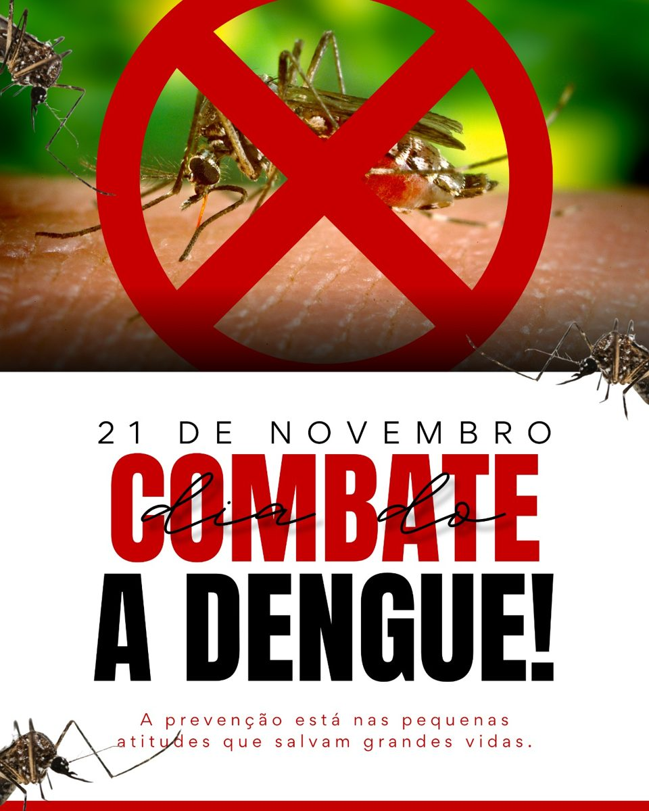
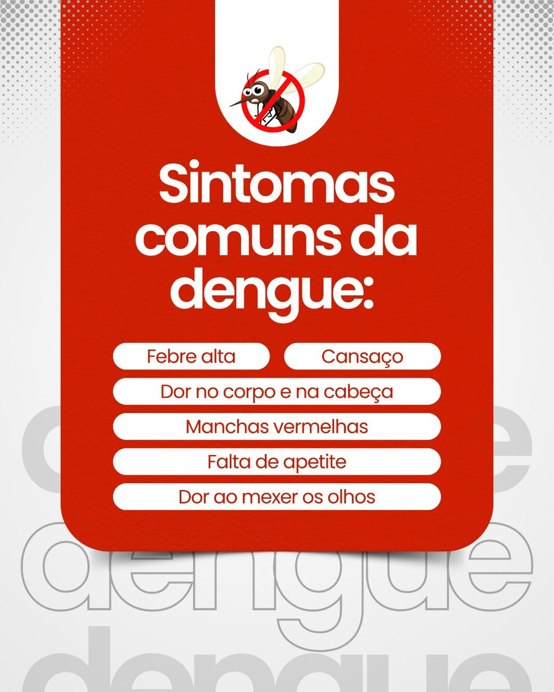
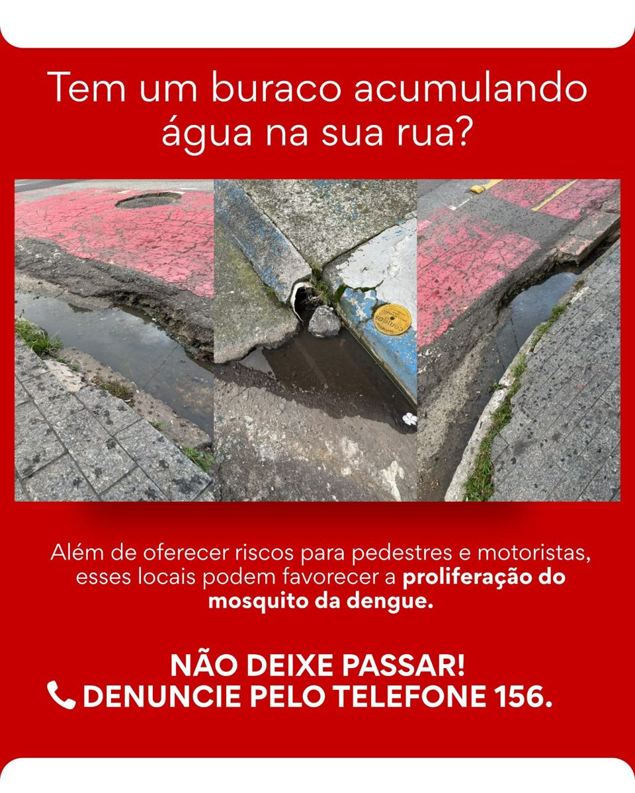

Pratos de plantas
Coloque areia até a borda do prato ou lave-o com bucha uma vez por semana. Evite plantas em água dentro de vasos e garrafas.
Campanha do bairro · Rio Pequeno, São Paulo
Não deixe que a dengue cresça! O mosquito se cria em água parada, e a maioria dos focos está dentro de casa. Poucos minutos por semana protegem você, sua família e seus vizinhos.

21 de novembro
A prevenção está nas pequenas atitudes que salvam grandes vidas. Aproveite a data para vistoriar sua casa, seu quintal e conversar com os vizinhos.
Ver dicas de prevençãoO Aedes aegypti precisa de pouca água para se reproduzir: uma tampinha de garrafa já basta. Eliminar o acúmulo de água é a forma mais eficaz de prevenção.
Coloque areia até a borda do prato ou lave-o com bucha uma vez por semana. Evite plantas em água dentro de vasos e garrafas.
Mantenha a caixa d'água, tonéis e cisternas bem vedados, sem frestas. O mosquito entra por qualquer abertura.
Ralos, lajes, calhas e áreas externas: escoe a água depois da chuva e mantenha as calhas desentupidas.
Garrafas, latas, potes e sacos: guarde virados para baixo, em local coberto, ou descarte no lixo com a sacola bem fechada.
Pneus velhos acumulam muita água. Guarde em local coberto ou leve a um ponto de descarte adequado.
Mantenha lixeiras tampadas e não deixe entulho, copos e embalagens no quintal ou na calçada.
Trate a água da piscina com cloro e mantenha filtro funcionando. Piscina sem uso deve ser coberta ou esvaziada.
Troque a água e esfregue as bordas do pote dos pets ao menos uma vez por semana: os ovos grudam na parede.
Os sinais costumam aparecer alguns dias após a picada e podem ser confundidos com outras viroses.

Mito. O Aedes aegypti prefere água limpa e parada, como a de vasos, pratos e caixas d'água.
Mito. O período de chuvas e calor aumenta os casos, mas os ovos resistem meses sem água. O cuidado deve ser o ano todo.
Mito. Existem vários tipos do vírus. Ter tido um não protege contra os outros, e uma segunda infecção pode ser mais grave.
Verdade. Um único foco no bairro pode gerar centenas de mosquitos. A prevenção só funciona quando todos fazem a sua parte.
Sim, há vacina disponível no Brasil, com público e regras definidos pelo Ministério da Saúde. Pergunte na sua UBS se você ou sua família podem tomar. Ela complementa, e não substitui, a eliminação dos focos.
Além de oferecer riscos para pedestres e motoristas, esses locais podem favorecer a proliferação do mosquito da dengue. Terrenos abandonados, entulho e bueiros com água parada também podem ser denunciados.
Não deixe passar!
Denuncie pelo telefone 156.

Acompanhe as novidades e os materiais da campanha no Instagram e compartilhe com seus vizinhos.
@riopequeno.contradengueClique para ampliar, salve e compartilhe com a vizinhança. #RioPequenoContraADengue